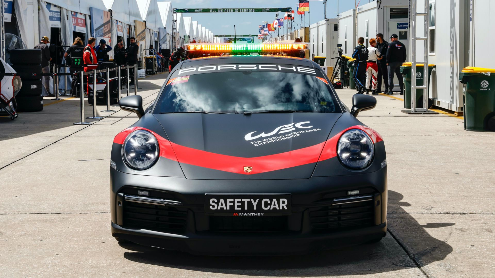

2023 SPROTING REGULATIONS
2023 FIA World Endurance Championship Sporting Regulations are available here.
Once again, sporting fairness and cost control has remained at the forefront of any amendments to the regulations.
FUEL
In 2022, the WEC adopted a new fuel (Excellium Racing 100) which is now in its second year of competition. This 100% renewable fuel produced by TotalEnergies will be produced on bioethanol basis made from wine residues from the French agricultural industry, and from ETBE produced at TotalEnergies' Feyzin refinery near Lyon (France) from feedstock also sourced from the circular economy. This will allow for greenhouse gas (GHG) emissions savings of at least 65% compared with traditional fossil fuels.
DRIVERS CATEGORISATION AND LINE-UPS
According to their race record and achievements, the drivers of the FIA World Endurance Championship (WEC) are categorised by a dedicated committee of the FIA as follows: Bronze, Silver, Gold and Platinum.
Hypercar: No Bronze drivers admitted
LMP2: A 2 or 3-driver line-up must include at least 1 Silver or Bronze driver
LMGTE Am: A 2 or 3-driver line-up must include at least 1 Bronze driver and 1 Bronze or Silver driver.
Notwithstanding the above, a dedicated committee, composed of an FIA representative, an ACO representative and a representative of the promoter LMEM, may grant a temporary dispensation from the rule on the composition of crews on the request of the Competitor provided that this dispensation:
- does not compromise track safety;
- does not generate a sporting advantage in relation to the other crews entered in the same category.
EQUIVALANCE SYSTEMS (PERFORMANCE AND TECHONOLGIES)
An equivalence system named "Balance of Performance" (BoP) applies to cars entered in the Hypercar and LMGTE Am category. The aim of BoP is to allow cars of different engineering designs to compete in the same category. The Endurance Committee will make adjustments to the BoP:
· As provided for in the Technical Regulations
· Through dedicated Endurance Committee decisions
HYPERCAR
In order to ensure sporting equality, the FIA and the ACO rely on the Balance of Performance formula developed jointly by the two parties. The Hypercar BoP has been tailored specifically for the needs of the new category, leaning of the knowledge and experience gained over the years.
The FIA and the ACO have a long history of using BoP, having started in GT racing the mid-2000s, and is constantly improving the process. The best practices and learnings were taken into account in developing the Hypercar BoP.
One of the most innovative solutions is the use of torque meters, allowing for better control of the powertrain parameters on track. These sensors, resistant to electromagnetic field and heat, are implemented onto the driveshafts of the cars to measure and limit the BoP-allocated power. This recently developed technology is effective in limiting development costs.
In 2021 and 2022, grandfathered non-hybrid LMP1 cars are permitted to race with Hypercars in the top category, with their performance balanced out. In 2022 the regulations will allow LMDh cars, developed jointly by the ACO and IMSA and sharing some parts of the car with the next generation of LMP2 cars, to race in the Hypercar class of the WEC alongside the Hypercar machinery.
LMP2
The FIA and the ACO do not wish to encourage LMP2 manufacturers to pursue performance developments. The main goals for LMP2 cars must be reliability, safety and low maintenance costs.
LMGTE AM
The GTE cars are based on production models and are fundamentally different from each other. To create a more level playing field for competition, the WEC Committee have the ability to apply fine adjustments in the performance of individual cars to allow each model to be competitive.
Success ballast will be imposed for LMGTE Am cars entered in the Championship. It will be in effect at all Competitions, except for the 24 Hours of Le Mans. The ballast calculation system uses the results of previous races (if any have been held) and championship positions, provided that all cars start any given season with a ballast of 0 kilogrammes.
TYRE ALLOCATIONS
DRY WEATHER TYRES
Le Mans
races
the season
specifications
for wet-weather
tyres
WET WEATHER TYRES
Unless specifically authorised in the present Regulations, wet weather tyres may be used only after the track has been declared ‘wet’ by the Clerk of the Course / Race Director. The number of wet weather tyres usable during a Competition is not limited.
DRIVING TIMES
For a 6 hour race, the minimum driving time for a Silver or Bronze rated driver in LMP2 is 1h15 and for LMGTE Am, it is 1h45.
During an 8 hour race, minimum driving time for Silver and Bronze drivers in LMP2 will be 1h40 and in LMGTE Am it will be 2h20.
If a driver does not achieve his/her minimum driving time, a penalty will be imposed by the Stewards, up to disqualification.
If a driver exceeds his/her maximum driving time, a penalty will be imposed by the Stewards, up to disqualification.
SAFTY CAR
On the decision of the Race Director, the safety car may be deployed to neutralise a race if competitors or officials are in immediate physical danger but the circumstances are not such as to necessitate stopping the race, to start a race in exceptional conditions (e.g. poor weather), to pace a rolling start and to resume a suspended race.
The safety car is designed or adapted for high performance circuit driving and with power adequate to maintain speeds at which the types of cars competing in the event can follow it without compromising their normal function. The safety car must be marked "SAFETY CAR" in letters of appropriate dimensions similar to those of the race numbers, on the rear and sides. It must have at least one clearly visible yellow or orange light on the roof and a green light showing to the rear, each powered by a different electrical circuit. It will be driven by an experienced circuit driver. It will carry an observer capable of recognising all the competing cars, and who is in permanent radio contact with race control.
There will be only one safety car in operation at a time, except for circuits of over 7 km in length, where other safety cars, positioned at intermediate points around the circuit, can be authorised by the FIA.
When the order is given to deploy the safety car, all marshal posts will display waved yellow flags and "SC" boards and the orange lights at the Line will be illuminated for the duration of the intervention. The safety car will start from the pit lane with its orange lights illuminated and will join the track regardless of where the race leader is. All the competing cars must then form up in line behind the safety car no more than five car lengths apart.
When the Race Director calls in the safety car, its orange lights will be extinguished; this will be the signal that it will be entering the pit lane at the end of that lap. At this point, the first car in line behind the safety car may dictate the pace and, if necessary, be more than five car lengths behind it. Each lap completed while the safety car is deployed will be counted as a race lap.
CONDITIONS FOR CLASSIFICATION
The car placed first is the one that covered the greatest distance up to the showing of the chequered flag (the position of the cars on the starting grid is not taken into account).
To be classified, a car must:
a) Cross the finish line on the race track when the chequered flag is shown, except in a case of force majeure at the Stewards’ discretion. It is prohibited to stop on the race track pending the showing of the chequered flag;
b) Have covered at least 70% of the distance covered by the car classified in first place in the overall classification.
c) The official number of laps will be rounded down to the nearest whole number.
POINTS
An additional point will be awarded, at each Competition, to the "pole position" team in each category (best time achieved by the car in each category during qualifying, and the 24 Hours of Le Mans Hyperpole, with the exception of additional cars), as well as to all the drivers making up the crew of the car concerned.
New for 2023: the FIA WEC points system has been amended. Points for finishing outside of the top ten (formerly 1 point for eight-hour and 24-hour races and 0.5 point for six-hour races) will no longer be awarded.